Chapter 21 Absenteeism in manufacturing
Employee absenteeism is a significant problem for most organizations. Absenteeism excludes paid leave and occasions where an employer has granted an employee time off.
If you’re a manager, supervisor, or team leader, you’ll have likely experienced cases of absenteeism. You should know that staff will be absent from time to time, such as for illness, jury duty, or bereavement. However, when absenteeism is frequent and excessive it begins to become a problem.
Absenteeism at the workplace affects both employers and employees alike.
Some consequences for employers include: * Reduced productivity levels. * High administration costs. * Increased labour costs if you hire replacement temporary workers. * Understaffing which could lead to poor customer service. * Poor morale among colleagues. This will be particularly prevalent if employees constantly have to fill in for absent staff and if they don’t see any retributions for absence.
To address this issue, HR professionals are encouraged to develop a business case and to devise and implement plans for managing employee attendance in their organizations. The following topics related to managing employee attendance are presented in this article:
The direct and indirect costs of absenteeism. Collecting attendance data for the organization. Measuring the cost of absenteeism. Calculating rates of absenteeism. Strategies aimed at addressing the organization’s particular attendance issues. Legal issues that may be implicated in designing and implementing absence control strategies.
##1.Define the goal (or HR business problem/issue).
A hypothetical company MFG has decided that it needs to do something about absenteeism. To start with, it wants answers to the following questions:
- What is its rate of absenteeism?
- Does anyone have excessive absenteeism?
- Is is the same across the organization?
- Does it vary by gender?
- Does it vary by length of service or age? Its guesses are that initially age and length of service may be related to absenteeism rates.
- Can it predict next year’s absenteeism?
- If so, how well can it predict?
- Can we reduce our absenteeism?
If they can make future People Management decisions “driven” by what the data is telling them, then they will feel they have started the People Analytics journey.
##2.Collect and Manage Data.
Let us suppose this is a skunkworks project. Formal separate resources have not be identified for this initiative. Only an initial look at recent data is possible. The HRIS system is able to provide some rudimentary information covering absences only for 2015 It was able to generate the following information as a CSV file (comma separated values):
- EmployeeNumber
- Surname
- GivenName
- Gender
- City
- JobTitle
- DepartmentName
- StoreLocation
- Division
- Age
- LengthService
- AbsentHours
- BusinessUnit
Ensure all needed libraries are installed
###Let’s read in the data provided
MFGEmployees <- read_csv("https://hranalytics.netlify.com/data/MFGEmployees4.csv")The first thing we should do is check on quality of data. Data will rarely be clean or perfect when we receive it. Either questionnable data should be corrected (preferrred) or deleted.
summary(MFGEmployees) EmployeeNumber Surname GivenName Gender
Min. : 1 Length:8336 Length:8336 Length:8336
1st Qu.:2085 Class :character Class :character Class :character
Median :4168 Mode :character Mode :character Mode :character
Mean :4168
3rd Qu.:6252
Max. :8336
City JobTitle DepartmentName StoreLocation
Length:8336 Length:8336 Length:8336 Length:8336
Class :character Class :character Class :character Class :character
Mode :character Mode :character Mode :character Mode :character
Division Age LengthService AbsentHours
Length:8336 Min. : 3.5 Min. : 0.0 Min. : 0.0
Class :character 1st Qu.:35.3 1st Qu.: 3.6 1st Qu.: 19.1
Mode :character Median :42.1 Median : 4.6 Median : 56.0
Mean :42.0 Mean : 4.8 Mean : 61.3
3rd Qu.:48.7 3rd Qu.: 5.6 3rd Qu.: 94.3
Max. :77.9 Max. :43.7 Max. :272.5
BusinessUnit
Length:8336
Class :character
Mode :character
The only thing that stands out initially is that age has some questionable data- some one who is 3 and someone who is 77. The range for purposes of this example should be 18 to 65. Normally you would want to clean the data by getting the correct information and then changing it.
21.0.1 For expediency we will delete the problem records in the dataset.
MFGEmployees<-
MFGEmployees %>%
filter(Age>=18 & Age<=65)Now let’s summarize again with cleaned up data
summary(MFGEmployees) EmployeeNumber Surname GivenName Gender
Min. : 1 Length:8165 Length:8165 Length:8165
1st Qu.:2081 Class :character Class :character Class :character
Median :4166 Mode :character Mode :character Mode :character
Mean :4165
3rd Qu.:6245
Max. :8336
City JobTitle DepartmentName StoreLocation
Length:8165 Length:8165 Length:8165 Length:8165
Class :character Class :character Class :character Class :character
Mode :character Mode :character Mode :character Mode :character
Division Age LengthService AbsentHours
Length:8165 Min. :18.2 Min. : 0.1 Min. : 0.0
Class :character 1st Qu.:35.5 1st Qu.: 3.6 1st Qu.: 20.1
Mode :character Median :42.1 Median : 4.6 Median : 55.9
Mean :42.0 Mean : 4.8 Mean : 60.5
3rd Qu.:48.5 3rd Qu.: 5.6 3rd Qu.: 93.4
Max. :65.0 Max. :43.7 Max. :252.2
BusinessUnit
Length:8165
Class :character
Mode :character
###Transform the data
Now calculate absenteeism rate by dividing the absent hours by total standard hours for the year (52 weeks/year * 40 hours/week = 2080 hours/year)
MFGEmployees <-
MFGEmployees %>%
mutate(AbsenceRate = AbsentHours /2080*100)
str(MFGEmployees)tibble [8,165 x 14] (S3: spec_tbl_df/tbl_df/tbl/data.frame)
$ EmployeeNumber: num [1:8165] 1 2 3 4 5 6 7 8 9 10 ...
$ Surname : chr [1:8165] "Gutierrez" "Hardwick" "Delgado" "Simon" ...
$ GivenName : chr [1:8165] "Molly" "Stephen" "Chester" "Irene" ...
$ Gender : chr [1:8165] "F" "M" "M" "F" ...
$ City : chr [1:8165] "Burnaby" "Courtenay" "Richmond" "Victoria" ...
$ JobTitle : chr [1:8165] "Baker" "Baker" "Baker" "Baker" ...
$ DepartmentName: chr [1:8165] "Bakery" "Bakery" "Bakery" "Bakery" ...
$ StoreLocation : chr [1:8165] "Burnaby" "Nanaimo" "Richmond" "Victoria" ...
$ Division : chr [1:8165] "Stores" "Stores" "Stores" "Stores" ...
$ Age : num [1:8165] 32 40.3 48.8 44.6 35.7 ...
$ LengthService : num [1:8165] 6.02 5.53 4.39 3.08 3.62 ...
$ AbsentHours : num [1:8165] 36.6 30.2 83.8 70 0 ...
$ BusinessUnit : chr [1:8165] "Stores" "Stores" "Stores" "Stores" ...
$ AbsenceRate : num [1:8165] 1.76 1.45 4.03 3.37 0 ...
- attr(*, "spec")=
.. cols(
.. EmployeeNumber = col_double(),
.. Surname = col_character(),
.. GivenName = col_character(),
.. Gender = col_character(),
.. City = col_character(),
.. JobTitle = col_character(),
.. DepartmentName = col_character(),
.. StoreLocation = col_character(),
.. Division = col_character(),
.. Age = col_double(),
.. LengthService = col_double(),
.. AbsentHours = col_double(),
.. BusinessUnit = col_character()
.. )We can now see our metric AbsenceRate has been calculated and created.
###Explore The Data
Part of collecting and managing data is the Exploratory Data Analysis.
Let’s start with bar graphs of some of the categorical data
MFGEmployees %>%
ggplot() +
aes(x=BusinessUnit) +
geom_bar() +
labs(x="Business Units",
y="Count",
title="Employee Count By Business Units") +
theme_minimal() +
coord_flip()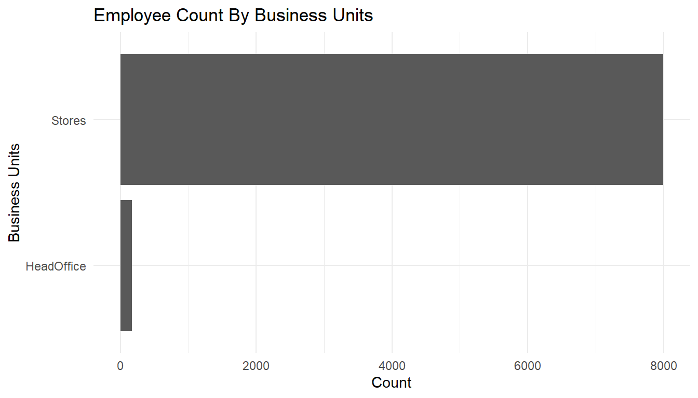
MFGEmployees %>%
ggplot() +
aes(x=Gender) +
geom_bar() +
labs(x="Business Units",
y="Count",
title="Employee Count By Gender") +
theme_minimal() +
coord_flip()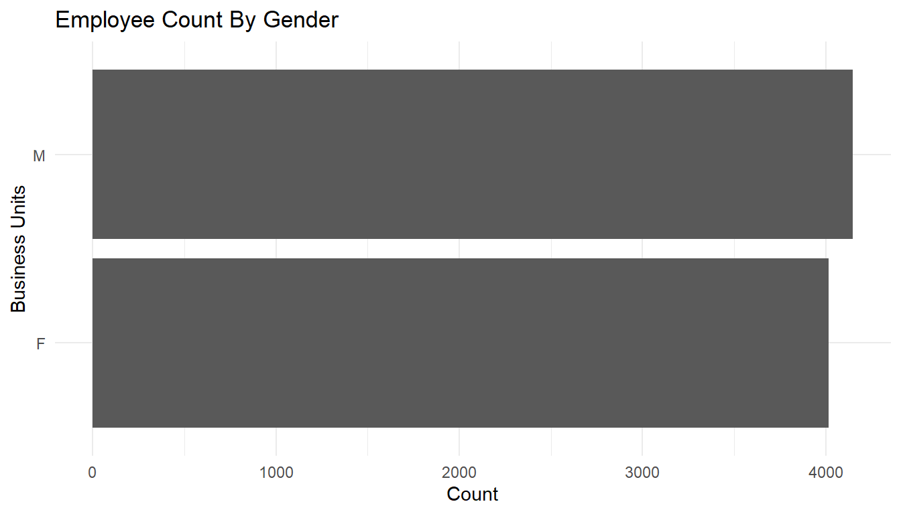
MFGEmployees %>%
ggplot() +
aes(x=Division) +
geom_bar() +
labs(x="Division",
y="Count",
title="Employee Count By Division") +
theme_minimal() +
coord_flip()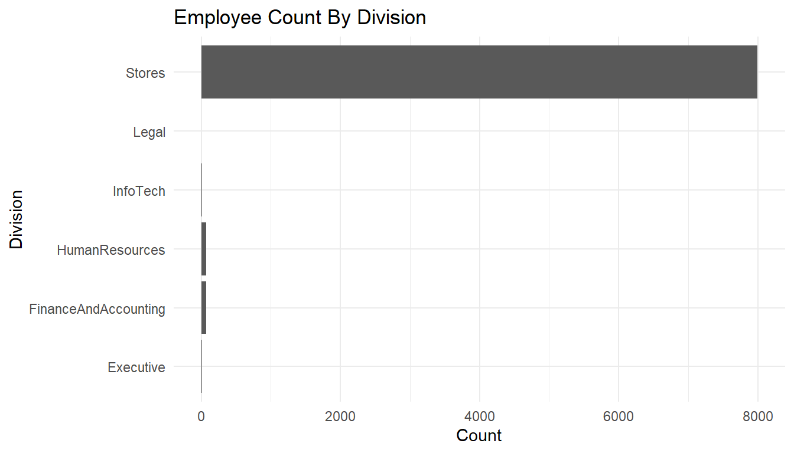
Let’s ask some of our questions answered through this exploratory analysis.
First of all, what is our absenteeism rate?
MFGEmployees %>%
summarise(median = median(AbsenceRate), mean = mean(AbsenceRate)) #Average absence rate and number of observations# A tibble: 1 x 2
median mean
<dbl> <dbl>
1 2.68572 2.90726means <- aggregate(AbsenceRate ~ 1, MFGEmployees, mean)
ggplot() +
geom_boxplot(aes(y = AbsenceRate, x =1), data = MFGEmployees) +
coord_flip() +
geom_text(data = round(means, digits = 3), aes(y = AbsenceRate, x =1, label = AbsenceRate), check_overlap=TRUE) + #Add average absence rate as a text
theme_minimal()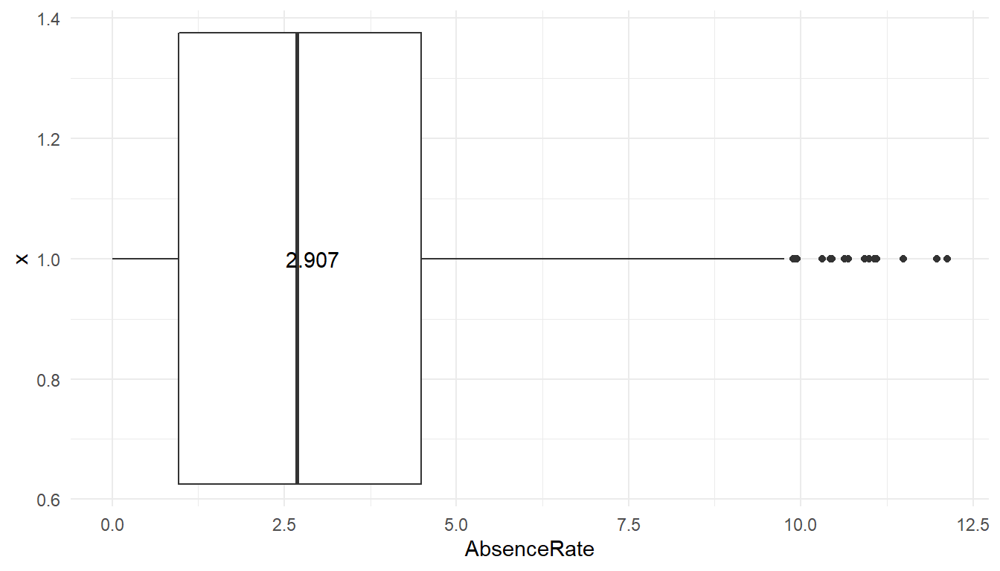 The average absence rate is ‘r scales::percent(mean(MFGEmployees$AbsenceRate).’
Does anyone have excessive absenteeism?
The boxplot shows the average (three digit number), the mean and standard deviation (through lines) of the data. Any observations beyond 3 standard deviations shows up as dots. So at least under that definition of outliers, some people show way more absenteeism than 99% of employees.
Does it vary across the organization?
When you conduct a piece of quantitative research, you are inevitably attempting to answer a research question or hypothesis that you have set. One method of evaluating this research question is via a process called hypothesis testing, which is sometimes also referred to as significance testing.
In order to undertake hypothesis testing you need to express your research hypothesis as a null and alternative hypothesis. The null hypothesis and alternative hypothesis are statements regarding the differences or effects that occur in the population. You will use your sample to test which statement (i.e., the null hypothesis or alternative hypothesis) is most likely (although technically, you test the evidence against the null hypothesis). So, with respect to our example, the null and alternative hypothesis will reflect statements about absences among the organization.
In the following we will use ANOVA, as statistical test.
ggplot() +
geom_boxplot(aes(y = AbsenceRate, x = Gender), data = MFGEmployees) +
coord_flip() +
theme_minimal()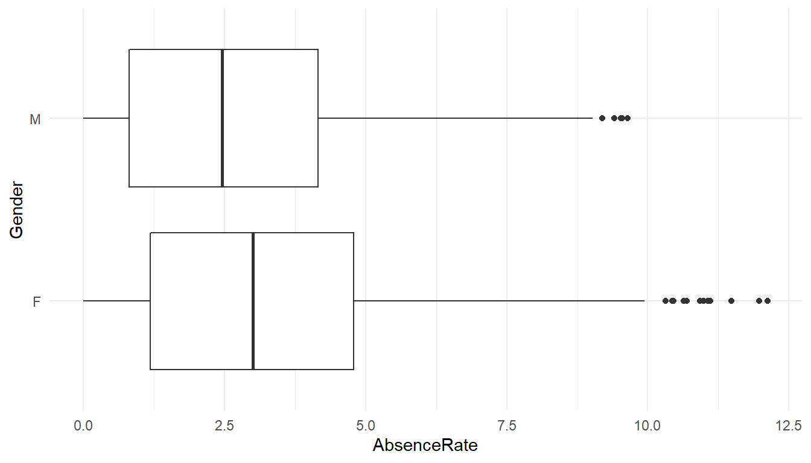
AnovaModel.1 <- lm(AbsenceRate ~ Gender, data=MFGEmployees) %>%
Anova()
AnovaModel.1 Anova Table (Type II tests)
Response: AbsenceRate
Sum Sq Df F value Pr(>F)
Gender 496 1 97.8 <0.0000000000000002 ***
Residuals 41379 8163
---
Signif. codes: 0 '***' 0.001 '**' 0.01 '*' 0.05 '.' 0.1 ' ' 1#means
MFGEmployees %>% group_by(Gender) %>% summarise(avg=mean(AbsenceRate))# A tibble: 2 x 2
Gender avg
<chr> <dbl>
1 F 3.15762
2 M 2.66481The output of the function is a classical ANOVA table with the following data: Df = degree of freedom Sum Sq = deviance (within groups, and residual) Mean Sq = variance (within groups, and residual) F value = the value of the Fisher statistic test, so computed (variance within groups) / (variance residual) Pr(>F) = p-value
Please note that the value 2.2e-16 actually means 2.2 X 10 ^ -16. It is just a way R prints numbers that are either too big or too small.
Since the p-Value is much less than 0.05, we reject the null hypothesis and accept the alternative hypothesis, i.e. the absence levels among are significantly different among genders.
ggplot() +
geom_boxplot(aes(y = AbsenceRate, x = Division), data = MFGEmployees) +
coord_flip() +
theme_minimal()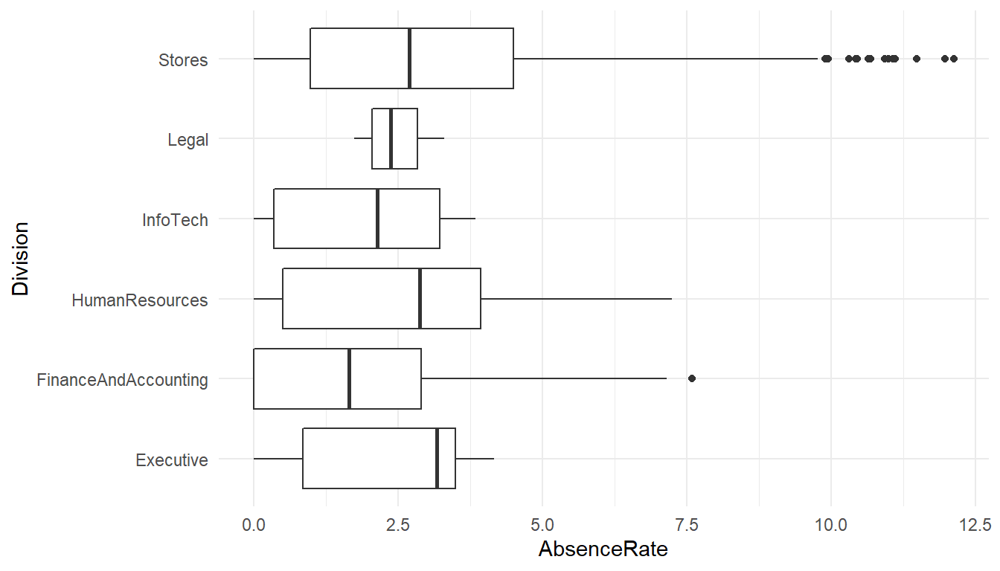
AnovaModel.2 <- lm(AbsenceRate ~ Division, data=MFGEmployees) %>%
Anova()
AnovaModel.2Anova Table (Type II tests)
Response: AbsenceRate
Sum Sq Df F value Pr(>F)
Division 91 5 3.56 0.0032 **
Residuals 41783 8159
---
Signif. codes: 0 '***' 0.001 '**' 0.01 '*' 0.05 '.' 0.1 ' ' 1# means
MFGEmployees %>% group_by(Division) %>% summarise(avg=mean(AbsenceRate))# A tibble: 6 x 2
Division avg
<chr> <dbl>
1 Executive 2.32358
2 FinanceAndAccounting 1.92189
3 HumanResources 2.65174
4 InfoTech 1.92600
5 Legal 2.47172
6 Stores 2.92086The absence levels among are significantly different among Division.
AnovaModel.3 <- lm(AbsenceRate ~ Division*Gender, data=MFGEmployees) %>%
Anova()
AnovaModel.3Anova Table (Type II tests)
Response: AbsenceRate
Sum Sq Df F value Pr(>F)
Division 92 5 3.61 0.0029 **
Gender 496 1 97.94 <0.0000000000000002 ***
Division:Gender 5 5 0.18 0.9708
Residuals 41283 8153
---
Signif. codes: 0 '***' 0.001 '**' 0.01 '*' 0.05 '.' 0.1 ' ' 1#means
MFGEmployees %>% group_by(Division, Gender) %>% summarise(avg=mean(AbsenceRate))# A tibble: 12 x 3
# Groups: Division [6]
Division Gender avg
<chr> <chr> <dbl>
1 Executive F 2.97642
2 Executive M 1.77955
3 FinanceAndAccounting F 2.17280
4 FinanceAndAccounting M 1.63408
5 HumanResources F 3.01449
6 HumanResources M 2.21431
7 InfoTech F 3.29811
8 InfoTech M 1.77354
9 Legal F 3.29811
10 Legal M 2.05853
11 Stores F 3.16905
12 Stores M 2.68079If varies significantly by the interaction of gender and division.
These are just a handful of the categorical summaries we could do.
Does AbsenceRate vary by length of service and age?
Scatterplots and correlations help answer this.
# basic scatterplot
MFGEmployees %>%
ggplot() +
aes(x=Age, y=AbsenceRate) +
geom_point(colour = "blue") +
theme_minimal()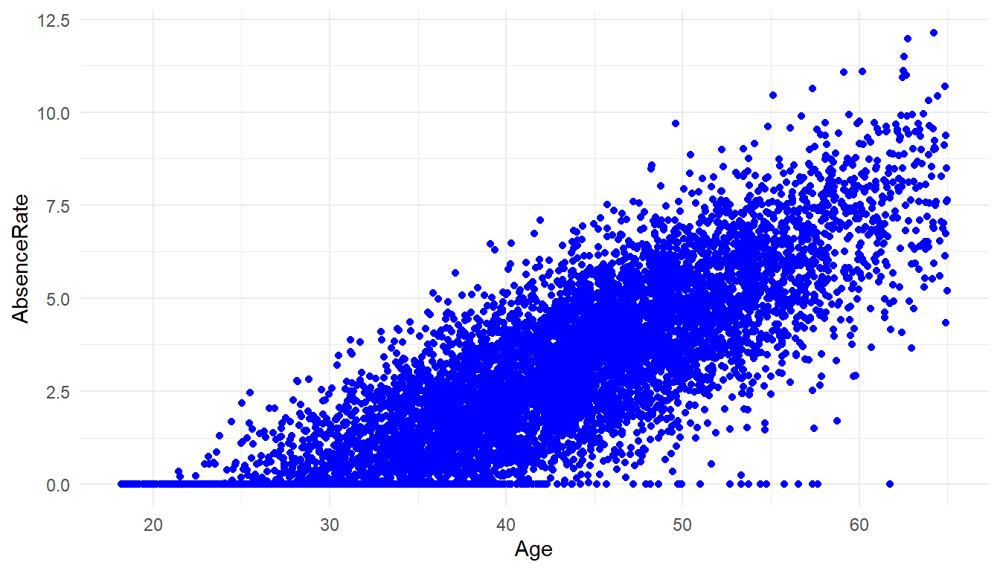
cor(MFGEmployees$Age, MFGEmployees$AbsenceRate)[1] 0.825There is a strong correlation of Age and Absence Rate
MFGEmployees %>%
ggplot() +
aes(x=LengthService, y=AbsenceRate) +
geom_point(colour = "blue") +
geom_smooth(method='lm', se = FALSE, color='red') +
theme_minimal()`geom_smooth()` using formula 'y ~ x'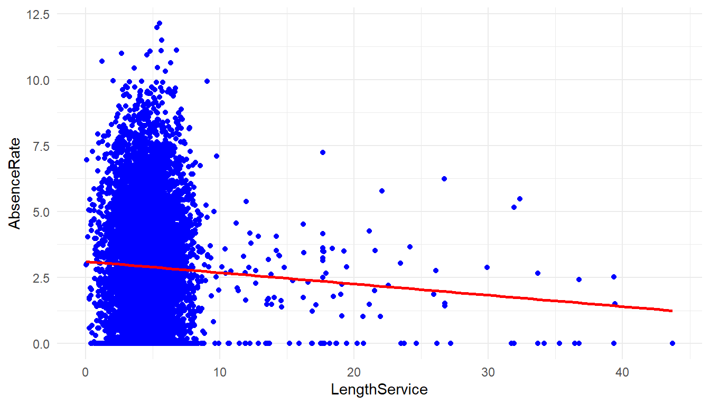
cor(MFGEmployees$LengthService, MFGEmployees$AbsenceRate)[1] -0.0467There is not a strong correlation between length of service and Absence Rate.
MFGEmployees %>%
ggplot() +
aes(x=Age, y=LengthService) +
geom_point(colour = "blue") +
geom_smooth(method='lm', se = FALSE, color='red') +
theme_minimal()`geom_smooth()` using formula 'y ~ x'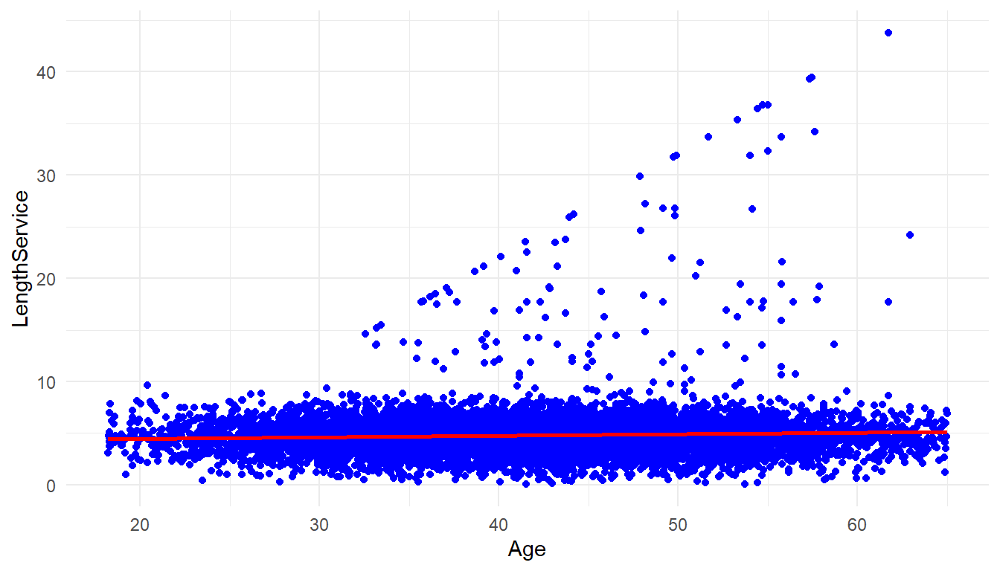
cor(MFGEmployees$Age, MFGEmployees$LengthService)[1] 0.0562There is not much correlation between age and length of service either.
So far, we have done data exploration, now we are going to start building a model and starting to answer more difficult questions.
##3. Build The model One of the questions asked in the defining the goal step was ‘whether it was possible to predict absenteeism?’
Absence Rate is a numeric continuous value. In the ‘Building a model’ step we have to chose which models/statistical algorithms to use. Prediction of a numerics continous values suggests a couple of models that could be brought to bear: Regression trees and linear regression. There are many more but for purposes of this article we will look at these.
###3.1 Regression Trees Regression Trees will allow for use of both categorical and numeric values as predictors. Let’s choose the following data as potential predictors in this analysis:
- Gender
- Department Name
- Store Location
- Division
- Age
- Length of Service
- Business Unit
Absence Rate will be the the ‘target’ or thing to be predicted.
MYinput <- c("Gender", "DepartmentName", "StoreLocation", "Division",
"Age", "LengthService", "BusinessUnit")
MYtarget <- "AbsenceRate"
library(rpart, quietly=TRUE)
set.seed(crv$seed)
MYrpart <- rpart(AbsenceRate ~ .,
data=MFGEmployees[, c(MYinput, MYtarget)],
method="anova",
parms=list(split="information"),
control=rpart.control(minsplit=10,
maxdepth=10,
usesurrogate=0,
maxsurrogate=0))
fancyRpartPlot(MYrpart, main="Decision Tree MFGEmployees and AbsenceRate")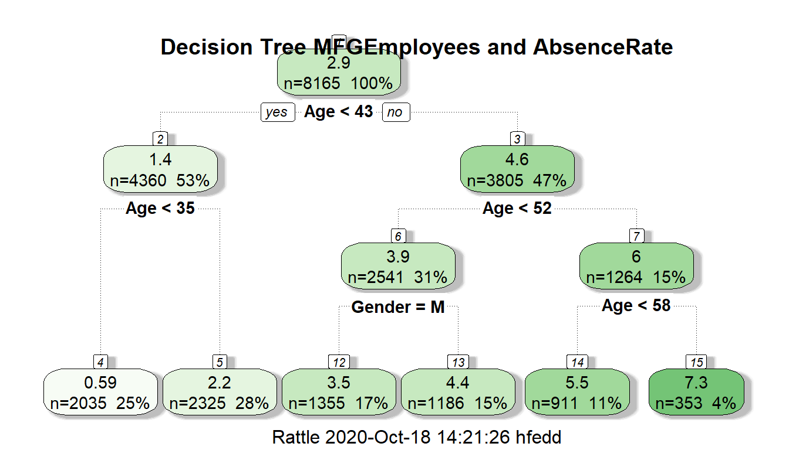
The regression decision tree shows that age is a big factor in determining absence rate with gender playing a small part in one of the age ranges: >43 and <52 with males having a lower absence rate in this group. Almost all categorical information other than gender doesn’t look like to help in the prediction.
Now let’s look at linear regression as another model. The restriction in linear regression is that it can only accept non-categorical variables. Categorical variables can sometimes be made numeric through transformation, but that is beyond the scope of this article.
###3.2 Linear Regression
In linear regression, then, we will need to restrict it to numeric variables:
- Age
- Length of Service
being used to predict absence rate.
#Linear Regression Model
RegressionCurrentData <- lm(AbsenceRate~Age+LengthService, data=MFGEmployees)
summary(RegressionCurrentData)
Call:
lm(formula = AbsenceRate ~ Age + LengthService, data = MFGEmployees)
Residuals:
Min 1Q Median 3Q Max
-5.358 -0.847 -0.023 0.852 5.103
Coefficients:
Estimate Std. Error t value Pr(>|t|)
(Intercept) -5.19021 0.06896 -75.3 <0.0000000000000002 ***
Age 0.20259 0.00151 134.2 <0.0000000000000002 ***
LengthService -0.08531 0.00565 -15.1 <0.0000000000000002 ***
---
Signif. codes: 0 '***' 0.001 '**' 0.01 '*' 0.05 '.' 0.1 ' ' 1
Residual standard error: 1.26 on 8162 degrees of freedom
Multiple R-squared: 0.689, Adjusted R-squared: 0.689
F-statistic: 9.03e+03 on 2 and 8162 DF, p-value: <0.0000000000000002The summary shows an adjusted R-squared of 0.689 which means approximately 69% of the variance is accounted by age and length of service. The variables are both significant at Pr(>|t|) of ’r summary(RegressionCurrentData)$coefficients[3,4]`. These results are using the entirety of the existing data to predict itself.
Graphically it look like this:
#2D plot of Age and AbsenceRate
ggplot() +
geom_point(aes(x = Age,y = AbsenceRate),data=MFGEmployees) +
geom_smooth(aes(x = Age,y = AbsenceRate),data=MFGEmployees,method = 'lm') +
theme_minimal()`geom_smooth()` using formula 'y ~ x'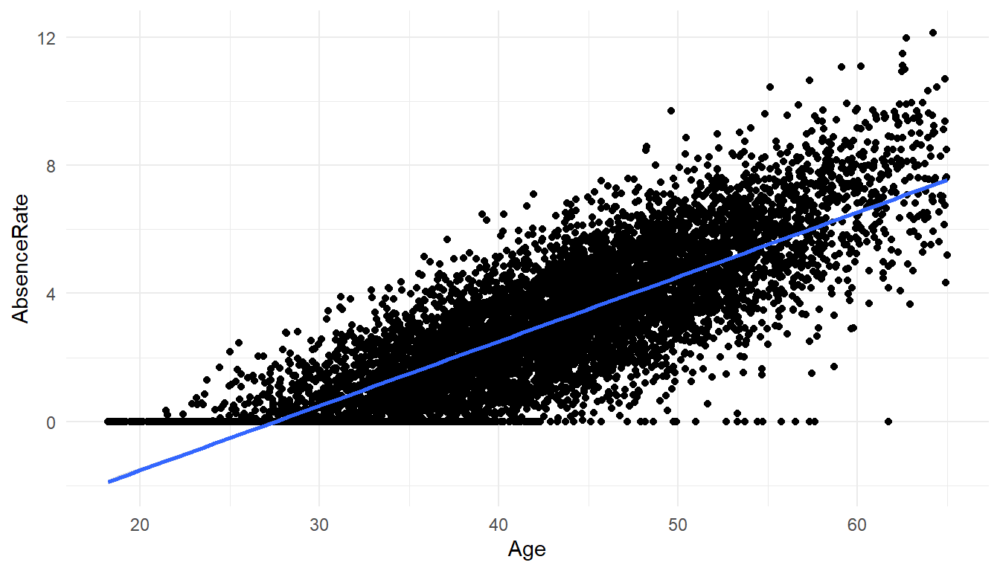
#3D Scatterplot of Age and Length of Service with Absence Rate - with Coloring and Vertical Lines
# and Regression Plane
library(scatterplot3d)
s3d <-scatterplot3d(MFGEmployees$Age,MFGEmployees$LengthService,MFGEmployees$AbsenceRate, pch=16, highlight.3d=TRUE,
type="h", main="Absence Rate By Age And Length of Service")
fit <- lm(MFGEmployees$AbsenceRate ~ MFGEmployees$Age+MFGEmployees$LengthService)
s3d$plane3d(fit)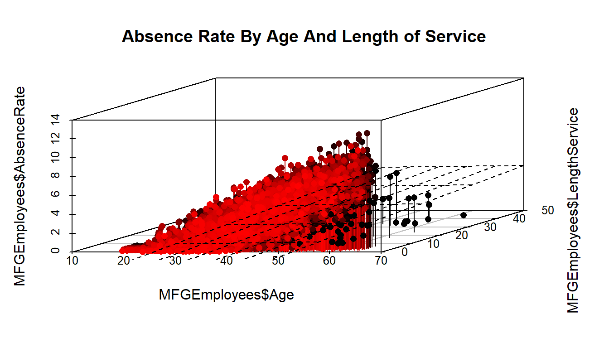
##4.Evaluate and evaluate the model
Up till now we have concentrated on producing a couple of models. The effort so far has had one weakness. We have used all of our data for 2015 to generate the models. They can both predict, but the prediction are based on existing data - that are already known. We don’t know how well it will predict on data it hasn’t seen yet.
To evaluate and critique the models, we need to train the model using part of the data and hold out a portion to test on. We will divide the data into 10 parts- using 9 parts as training data and 1 part as testing data, and alternate which are the 9 and the 1, so that each of the 10 parts gets to be training data 9 times and testing data once.
The R “caret” library helps us do that. We will run both a regression tree and linear regression and compare how they do against each other.
First the Linear Regression
library(caret)
set.seed(998)
inTraining <- createDataPartition(MFGEmployees$BusinessUnit, p = .75, list = FALSE)
training <- MFGEmployees[inTraining,]
testing <- MFGEmployees[ - inTraining,]
fitControl <- trainControl(## 10-fold CV
method = "repeatedcv", number = 10,
repeats = 10 ## repeated ten times
)
set.seed(825)
lmFit1 <- train(AbsenceRate ~ Age + LengthService, data = training,
method = "lm",
trControl = fitControl)
lmFit1Linear Regression
6124 samples
2 predictor
No pre-processing
Resampling: Cross-Validated (10 fold, repeated 10 times)
Summary of sample sizes: 5511, 5511, 5512, 5512, 5511, 5512, ...
Resampling results:
RMSE Rsquared MAE
1.27 0.691 1.01
Tuning parameter 'intercept' was held constant at a value of TRUETestingdatasetandpredictions <- testing %>% add_predictions(lmFit1, type = "raw")
Testingdatasetandpredictions$pred[Testingdatasetandpredictions$pred<0] <- 0 #Put a zero to all negative predictionsThe Rsquared shows a value of 0.688 which means even with sampling different parts of the data on 10 fold cross validation the use of age and length of service seems to be pretty robust so far.
Next the decision tree. The first time with just the numeric variables.
set.seed(825)
rpartFit1 <- train(AbsenceRate ~ Age + LengthService, data = training,
method = "rpart",
trControl = fitControl,
maxdepth = 5)
rpartFit1CART
6124 samples
2 predictor
No pre-processing
Resampling: Cross-Validated (10 fold, repeated 10 times)
Summary of sample sizes: 5511, 5511, 5512, 5512, 5511, 5512, ...
Resampling results across tuning parameters:
cp RMSE Rsquared MAE
0.0633 1.43 0.606 1.14
0.0945 1.56 0.534 1.26
0.4892 1.96 0.474 1.61
RMSE was used to select the optimal model using the smallest value.
The final value used for the model was cp = 0.0633.You will notice that the decision tree with 10 fold cross validation didn’t perform as well with an RSquared of approximately 0.60
The second time with the original categorical and numeric varibles used.
set.seed(825)
rpartFit2 <- train(AbsenceRate ~ Gender + DepartmentName + StoreLocation + Division + Age + LengthService + BusinessUnit, data = training,
method = "rpart",
trControl = fitControl,
maxdepth = 5)
rpartFit2CART
6124 samples
7 predictor
No pre-processing
Resampling: Cross-Validated (10 fold, repeated 10 times)
Summary of sample sizes: 5511, 5511, 5512, 5512, 5511, 5512, ...
Resampling results across tuning parameters:
cp RMSE Rsquared MAE
0.0633 1.43 0.606 1.14
0.0945 1.56 0.534 1.26
0.4892 1.96 0.474 1.61
RMSE was used to select the optimal model using the smallest value.
The final value used for the model was cp = 0.0633.Here when you include all originally used vaiables in 10 fold cross validation, the Rsquared changed little and is still around 0.60.
So far, the linear regression is performing better.
##5.Present Results and Document
The presenting of results and documenting is something that R helps in. You may not have realized it, but the R Markdown language has been used to create the full layout of these two blog articles. HTML,PDF and Word formats can be produced.
R Markdown allows the reader to see exactly what you having been doing, so that an independent person can replicate your results, to confirm what you have done. It shows the R code/commands, the statistical results and graphics, all is included in the Absenteeism-Part.Rmd file.
##6.Deploy Model
Once you have evaluated your model(s) and chosen to use them, they need to be deployed so that they can be used. At the simplest level, ‘deploy’ can mean using the ‘predict’ function in R (where applicable) in conjunction with your model.
Can it predict next year absenteeism?
Let’s predict the 2016 Absenteeism from the 2015 model.
If we make the simplifying assumption that nobody quits and nobody new comes in, we can take the 2015 data and add 1 to age and 1 to years of service for an approximation of new 2016 data before we get to 2016.
#Apply model
#Generate 2016 data
Absence2016Data<-MFGEmployees
Absence2016Data$Age<-Absence2016Data$Age+1
Absence2016Data$LengthService<-Absence2016Data$LengthService+1
Absence2016Data <- Absence2016Data %>% add_predictions(lmFit1, type = "raw")
Absence2016Data$pred[Absence2016Data$pred<0] <- 0 #Put a zero to all negative predictionsTo get single estimate for 2016 we ask for mean of absence rate.
mean(Absence2016Data$pred)[1] 3.08mean(MFGEmployees$AbsenceRate)[1] 2.91The first figure above is the 2016 prediction, the second is the 2015 actual for comparison.
If so, how well can it predict?
As mentioned previously, about ‘r scales::percent(mean(MFGEmployees$AbsenceRate).’ of the variation is accounted for in a linear regression model using age and length of service.
Can we reduce our absenteeism?
On the surface, only getting the age reduced and length of service increased will reduce absensteeism with this model.
Obviously, absenteeism is much more complex that just the rudimentary data we have collected. A serious look at this metric and problem would require more and different kinds of data. As mentioned before, the raw data used in this article and analysis is totally contrived to illustrate an example.